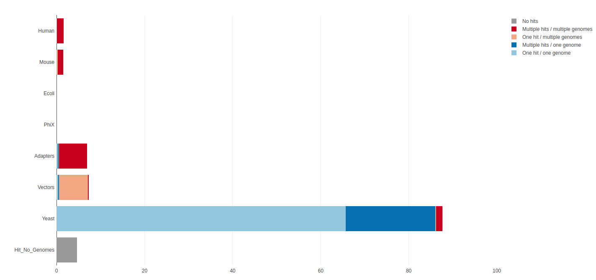
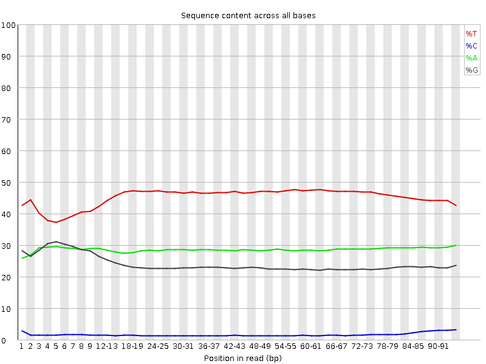
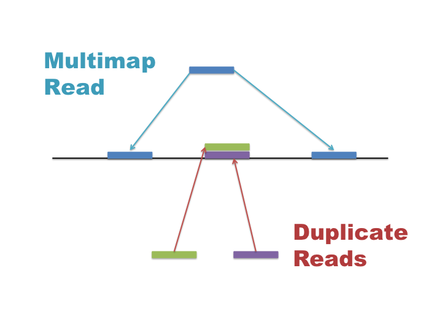
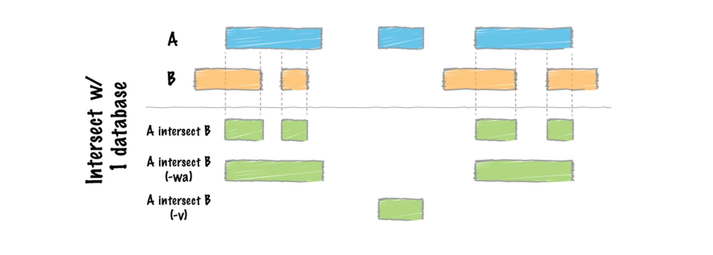
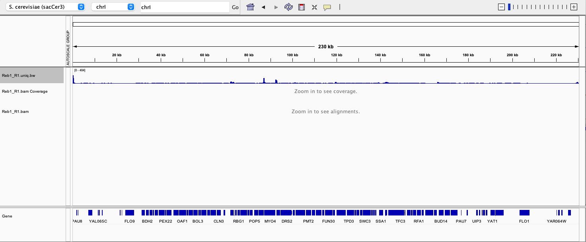
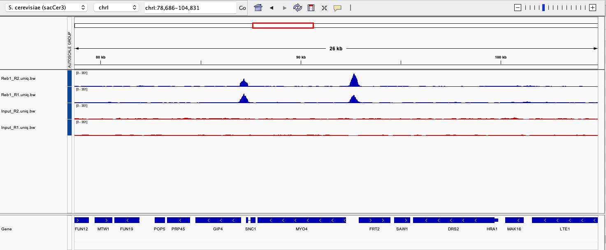

Processing Data
Learning Objectives
Set up a project folder
Assess quality of sequence data
Align reads to a reference genome and perform post alignment filtering
View read coverage profiles and alignments in a genome browser
1. Getting Started
We are using the Linux command line to run most of the tools we use today. If you are new to Linux a good starting point is the Introduction to Linux Workshop.
Logging in
We have several servers that you can login to. For the purpose of this practical we will use bifx-core2. No matter where you login, you will have access to the same files and programs. bifx-core3 is also available, both bifx-core2 and bifx-core3 require you to use a VPN.
There are several options to login to our machines. You can use the Terminal app on a Mac or equivalant Command Prompt or MobaXTerm on Windows. Login via X2G0 if you want a graphical interface.
To login via command line: ssh USER@bifx-core2.bio.ed.ac.uk
Login with your user credentials (the same as EASE)
If you are using MobaXTerm, an alternative way of logging in to the server is shown in the MobaXTerm demo.
Once you have typed in your password, you should see some welcome text and a prompt that looks something like this:
[USERNAME]@bifx-core2:~$
Creating A Web Directory
In order to view files created on the server, we need to create a public_html directory.
After logging in you should be in your $HOME directory, check with;
pwdThis should show the PATH of your present working directory, which should now be your home directory as you have just logged in. You can return to this place at any time using the change directory command.
cdYou have permissions to create files and directories under your home folder. Lets create some now which we will use later on.
mkdir ~/public_html
mkdir ~/public_html/TMPHere we have used the absolute path name for each directory using ~/ as a shortcut for your $HOME directory. Nested directories are separated by the forward slash ‘/’ sign.
As you have created ~/public_html, contents of this directory are available online with any web browser
To see it enter the following URL, changing yourUserName to what ever your username is.
http://bifx-core3.bio.ed.ac.uk/~yourUserName
For some users this may be under; https://bifx-core3.bio.ed.ac.uk/Public/yourUserName
ChIP-seq sequencing data
The datasets used in this exercise are derived from a single end ChIP-seq experiment (actually ChIP-exo) in S.cerevisiae. There are 2 biological replicates (though we recommend using 3 or more!) Reb1_R1 and Reb1_R2 as well as their corresponding input controls Input_R1 and Input_R2. For this experiment immunoprecipitation was performed with antibodies against Reb1. Reb1 recognizes a specific sequence (TTACCCG) and is involved in many aspects of transcriptional regulation by all three yeast RNA polymerases and promotes formation of nucleosome-free regions (NFRs). You can find the original publication here. For the purpose of this workshop we have randomly subsampled and filtered out poor quality reads to speed up runtime.
| Dataset | Description |
|---|---|
| Reb1_R1 | ChIP experiment, replicate 1 |
| Reb1_R2 | ChIP experiment, replicate 2 |
| Input_R1 | Input DNA, replicate 1 |
| Input_R2 | Input DNA, replicate 2 |
Obtaining data
First, make a new directory for this tutorial and move into that directory. Then link the directory to your public html folder as we are going to make everything public in this tutorial.
cd
mkdir ChIP-seq_workshop
cd ChIP-seq_workshop
ln -s $PWD ~/public_html/Next, create a subfolder called fastq for all of our sequence files and link the raw datasets to this folder:
mkdir fastq
cp /home/library/training/ChIP-seq_workshop/data/*fq.gz fastq/.When you receive data from a sequencing centre the file should also be provided with an alphanumeric string known as an md5 checksum. We can think of this as a files passport or fingerprint and use it to verify our data and ensure it wasn’t corrupted or truncated during download. The md5 checksums for these files are below. Lets check that now using the md5sum command:
| md5 checksum | filename |
|---|---|
| 914b4dda687a76b0d50e545e3ce705d6 | Input_R1.fq.gz |
| f421ed18b71a801b236612cdde49dbaf | Input_R2.fq.gz |
| dd363301ad237ecb6c81c59ae97995a2 | Reb1_R1.fq.gz |
| 06623f9e556876dd6c4d1dfdc4348698 | Reb1_R2.fq.gz |
cd fastq #Move into the fastq directory
md5sum *.fq.gz > md5
cat md5 #prints out the contents of md5
#To check the files and md5 sums match at any time
md5sum -c md5 Integrative Genomics Viewer
Later we will use the Integrative Genomics Viewer (IGV), please install this on your own machine, alternatively you can use the App.
Key Points:
- Log in to the bifx servers
- Create a personal web directory
- Create a project directory for fastq files
- Running IGV
2. Quality Control
FastQ files
Sequencing data will typically be provided to you in fastq format (.fq or .fastq) or as a compressed gzipped fastq (.fq.gz) in order to save space. We can view a gzipped file with the zless command, let’s take a look:
cd ChIP-seq_workshop/fastq # Move into the fastq directory (if not already)
zless Input_R1.fq.gz | head -n 12Fastq files contain 4 lines per sequenced read:
- Line 1 begins with an ‘@’ character and is followed by a sequence identifier and an optional description
- Line 2 is the raw sequence
- Line 3 begins with a ‘+’ character and is optionally followed by the same sequence identifier
- Line 4 encodes the Phred quality score for the sequence in Line 2 as ASCII characters
Phred Quality Score Base Call Error Probability:
| Score | Probability |
|---|---|
| Q40 | 0.0001 (1 in 10,000) |
| Q30 | 0.001 (1 in 1,000) |
| Q20 | 0.01 (1 in 100) |
| Q10 | 0.1 (1 in 10) |
First we want to assess the quality of our sequencing data and check for any biases and contamination.
FastQ screen
When running a sequencing pipeline it is useful to know that your sequencing runs contain the types of sequence they’re supposed to. FastQ Screen allows you to set up a standard set of libraries against which all of your sequences can be searched. Your search libraries might contain the genomes of all of the organisms you work on, along with PhiX, Vectors or other contaminants commonly seen in sequencing experiments. We will run a screen of our sequences against human, mouse, rat, e.coli and s.cerevisiae (defaults):
cd .. #Move up a directory again
fastq_screen --conf /home/genomes/tool_configs/fastq_screen/fastq_screen.conf fastq/*fq.gz --outdir fastq
# * is a wild card characterOnce complete take a look at the output images in your browser via your public html folder. This shows that most of your reads align to the yeast genome and that no reads align uniquely to other organisms: 
FastQC
FastQC provides simple quality control checks on raw sequence data coming from high throughput sequencing pipelines. It provides a modular set of analyses which you can use to get a quick impression of whether your data has any problems of which you should be aware before proceeding.
fastqc fastq/*.fq.gzFastQC will create report files for each of your datasets which we can view in the browser. We will go through each of the images during the workshop. For future reference, specific guidance on how to interpret the output of each module is provided in the fastqc help pages.
An example of poor quality sequencing at the end of short reads:

The software gives a pass, fail or warning flag for each test based on what we would expect from a regular DNA-sequencing run. It is important to realise that FastQC does not understand the origin of your data and that different datasets will have different characteristics. For instance RNA sequencing often involves the use of random hexamer primers that are not as random as you might expect. The profile below in the first ~15 bases is perfectly normal for these samples but will be flagged as an error by FastQC:

Bisulfite treatment (used to investigate DNA methylation) converts most Cs in the genome to Ts, as we can see below. FastQC will not be happy with this profile, the point is, understand what you have sequenced and what you expect to see rather than blindly trusting the FastQC flag system!

Visit the QCFail website for more examples and advice on quality control for NGS datasets.
MultiQC
We can view summaries of multiple reports at once by using multiqc:
multiqc -o fastq fastqMultiQC searches for report files in a directory and compiles them into a single report. Open the multiqc report via a web browser to see how the raw datasets compare. Here we have the output of FastQ_screen and FastQC, but MultiQC works with the outputs of many tools other tools which we’ll see later.
If we look at the adapter content and over represented sequences sections we can see a small amount of contamination particularly in the second replicates.
Parallelisation
Up until now we have run command line tools on each one of our datasets in serial, this means they run one after the other. In this tutorial we only have a few small datasets and the tools run relatively quickly, but this approach won’t scale well to multiple large datasets. A more efficient approach is to run all of our datasets in parallel, later we will create a script.
parallel
Unix has a program called parallel which allows you to run tools on multiple datasets at the same time. The following command would list all of your gzipped fastq files and pipe them into parallel.
ls fastq/*fq.gz | parallel -j 4 fastqc {} &
ps f- ls lists files ending with .fq.gz in your fastq directory and pipes the names in to parallel
- The parallel -j flag stands for juggle and tells parallel to run 4 processes at the same time.
- In this case we are running fastqc and the {} is a place holder for the filenames we are piping in.
- The & character runs these jobs in the background so we can continue to use the terminal.
- ps is the process status tool which shows jobs running in the current session, we should see 4 instances of fastqc running.
First, let’s create a file that lists our sample names so we can feed this into parallel. We could just type this manually, but here fastq files are ‘piped’ into parallel as above but we use regular expression within ‘sed’ to remove the name ending, this can now be used to name all files.
ls fastq/*fq.gz | parallel basename | sed s/.fq.gz// > samples.txtChallenge:
See if you can adapt the FastQC command to use the samples.txt file in parallel.
Hint: cat samples.txt will print the names of the samples.
Solution
Solution.
cat samples.txt | parallel -j 4 fastqc fastq/{}.fq.gz
Pre-processing: Quality trimming and adapter removal
From the FastQC report we can see that the overall quality of our sequencing is good, however it is good practice to perform some pre-processing and filtering of reads. Poor quality sequencing can make a read less alignable so it is good practice to quality trim the ends of reads until we get to the high quality portion. Trimming is not always neccessary as some mapping programs will trim the reads for you or perform soft clipping where only part of a read is required to align but studies have shown that pre-processing generally improves alignment rate if done correctly.
Sequencing libraries are normally constructed by ligating adapters to fragments of DNA or RNA. If your read length is longer than your fragment then sequenced reads will contain the adapter sequence. Adapter removal is also a necessary consideration for your QC workflow, especially if adapters are detected by FastQC.
An example of adapter contamination at the end of reads: 
Once reads have been trimmed they will vary in length. You may want to filter out reads that are now too short to be uniquely mapped. Normally a cutoff of 20-30bp is standard.
Trim with caution and think about the consequences of having different length reads later on in your pipeline. In fact, it is possible to overtrim your reads and aggressively remove valid data.
Cutadapt
Cutadapt finds and removes unwanted sequences from your high-throughput sequencing reads. Cutadapt can perform quality trimming, adapter removal and read filtering as well as many other operations to prepare your reads for optimal alignment. We will run cutadapt with the following parameters:
- -a : The sequence of the adapter to remove
- -q : Trim reads from the 3’ end with the given quality threshold (Phred score)
- –minimum-length : Filter out reads below this length
cat samples.txt | parallel -j 4 "cutadapt -a AGATCGGAAGAG -q 20 --minimum-length 36 -o fastq/{}.trim.fq.gz fastq/{}.fq.gz > fastq/{}.trim.cutadapt_report.txt"We will also run FastQC on the trimmed dataset.
cat samples.txt | parallel -j 4 fastqc fastq/{}.trim.fq.gzTo view a cutadapt report:
less fastq/Reb1_R1.trim.cutadapt_report.txthit ‘q’ to exit less.
Let’s compare the fastqc reports using multiqc. As you have run it already you need to use the force (-f) flag to get it to overwrite the current report.
multiqc -f -o fastq fastqOpen the multiqc report via a web browser to see how the raw and trimmed datasets compare.
Other QC software worth investigating
- Trimmomatic is very good and runs with Java
- Trim Galore!
Key Aims:
- Understand the Fastq format
- Check for contaminants
- Assess sequence quality
- Understand parallel
- Trim your data
3. Mapping and Filtering
Read Alignment
In this workshop we are going to align our ChIP-seq reads to the yeast reference genome. There are many tools available for mapping reads each with their own purposes and strengths. We are going to use BWA as it is suitable for aligning single end short ChIP-seq reads and has a reasonable balance of accuracy and speed.
Genome assemblies and indexing
First, we need to select a reference genome to align to. Every time a reference genome is released or updated it is given a new name, often referred to as the genome build or assembly (..hg18, hg19, hg38). It is important to realise that different builds of the same genome are different sequences and thus their co-ordinate sytems are incompatable. For instance position 10000000 on chr1 is T in hg19 and G in hg38.
We are going to map our reads to the latest release of the yeast genome sacCer3. We need to create an index file from the sacCer3 sequence so that BWA can quickly access the reference sequences. Luckily many of these indexes are pre-computed on our servers and stored under the ~genomes directory so you would only need to run this step for a new genome:
# do not run
#bwa index -p /home/genomes/s.cerevisiae/sacCer3/bwa_indexes/sacCer3 -a is /home/genomes/s.cerevisiae/sacCer3/sacCer3.faMapping reads with BWA
Once we have an index we can align our reads to the sacCer3 genome with BWA. This will take ~5 minutes to run so let’s get it started:
First create a new directory for the alignments and sub directories for each sample to keep your data organsied:
mkdir bwa_out
cat samples.txt | parallel -j 4 mkdir bwa_out/{}Then run bwa on each of your samples. Note that we are redirecting the output to a file using > so we put the full command in quotes for parallel to execute.
cat samples.txt | parallel -j 4 "bwa mem -t 5 -a -R '@RG\tID:{}\tPL:ILLUMINA' -M /home/genomes/s.cerevisiae/sacCer3/bwa_indexes/sacCer3 fastq/{}.trim.fq.gz > bwa_out/{}/{}.sam"This will take slightly longer to run.
SAM/BAM/CRAM format and Samtools
The standard output for most mapping software is SAM (sequence alignment/map format). SAM files contain many columns that describe the position of each alignment as well as information on the quality of the alignment, mismatches, the number of times a read mapped, mapping of paired ends and other custom flags and statistics. SAM files can be very large so there are compressed alternatives BAM and CRAM. The samtools package has many useful tools for viewing and manipulating files in SAM format. We will use some of these below.
Take a look at the SAM format specification and the first few lines of your SAM output using samtools:
samtools view bwa_out/Reb1_R1/Reb1_R1.sam | less The second column is the SAM flag and contains coded information about each alignment. Use the Explain SAM flags resource to find out more about the alignments in your file.
We can also see the samtools header using the -h flag which contains information on the parameters and indexes used to create the file.
samtools view -h bwa_out/Reb1_R1/Reb1_R1.sam | lessWe can use samtools to sort the sam file by co-ordinate and output in the binary format BAM to save disk space. The BAM file can also be indexed to allow quick programmatic access for visualisation and processing. We can feed multiple commands into our call to parallel by separating them with a semi colon ;.
cat samples.txt | parallel -j 4 "samtools sort bwa_out/{}/{}.sam -o bwa_out/{}/{}.bam -T bwa_out/{}/{} -O BAM; samtools index bwa_out/{}/{}.bam"Take a look at the contents of the bwa_out directory now. The -lh flag prints out a directory in list view with human readable file sizes.
ls -lh bwa_out/* Notice the difference in size between the SAM and BAM files and the .bai file which is the bam index. Let’s look at one of the BAM files using samtools idxstats to see where our reads align
samtools idxstats bwa_out/Reb1_R1/Reb1_R1.bamThe third column represents the number of alignments to each chromosome and at the bottom we can see some reads which have not mapped at all.
Key points:
- Align reads to a reference genome
- Understand alignment file formats
4. Post Processing
Filtering reads with samtools
Now that we have aligned our reads we may want to do some filtering before any downstream analysis. Make sure you are aware of the alignments that are reported by your mapping program and the parameters used. For instance, are unmapped reads reported? Are all alignments to repeats reported or just one? Are paired-end alignments still reported if only one end maps?
There are many ways to filter your BAM files with samtools and other programs to remove unwanted alignments that may negatively affect your downstream analysis. This will not be covered in depth here, instead we will simply remove all non-uniquely mapped reads. These reads map to multiple regions of the genome and can skew classification of peaks in our data. In this case we are not interested in looking at repeat regions of the genome so we will remove these reads. This can be done by filtering out all reads with mapping quality less than 20.
Multimap reads and Duplicate reads
Multimap and duplicate reads are often confused so it is important to understand what these are and how they affect your data:
- Multimap reads = The read exists once in your library and aligns to multiple repeat locations in the reference genome
- Duplicate reads = Multiple reads with the same sequence align to identical locations in the genome.

Multimap reads are difficult to analyse as their ambiguity can confound results. Many applications require the use of unique alignments only, thus multimap reads need to be removed from your BAM file. Aligners assign a mapping quality to each read (column 5 in BAM) between 0 and 255 that describes its confidence in the alignment position. Assigned mapping qualities differ between mappers and BWA uses a phred score to measure the accuracy of an alignment. Filtering out reads with a mapping quality < 20 means that all remaining alignment positions are 99% accurate. We can use samtools view -q to filter based on mapping quality
cat samples.txt | parallel -j 4 "samtools view -b -q 20 bwa_out/{}/{}.bam -o bwa_out/{}/{}.uniq.bam; samtools index bwa_out/{}/{}.uniq.bam"Note that there are aligners and analysis packages that attempt to deal with multimap reads and assign weights to each alignment, although methods are still in development. If you are interested in repeat elements or don’t want to discard any potentially useful information then you will need a strategy to deal with these reads.
Duplicate reads are often observed as tall spikes in your read depth profile where reads are stacked directly on top of each other. A high level of duplication in your library is often a sign of over amplification by PCR and we may want to remove this bias from our result. However, these reads may also derive from separate fragments of DNA in your sample, thus we would be removing real data. It is often a good idea to mark your duplicate reads and produce outputs both with and without duplicates for comparison. Read more about duplication bias here.
The Picard package has many useful utilities for manipulating SAM/BAM files. The MarkDuplicates tool will check the alignment positions for duplicate reads and mark or remove them from your data depending on how you wish to treat them.
Using paired-end reads or random primers in your library preparation can help separate some of the original reads from PCR duplicates.
Genome blacklists
The ENCODE project produced 100s of NGS datasets and found that certain regions of the genome were consistently prone to overinflated read depths regardless of the sample or preparation. Some of these are repeats of variable copy number, others are likely to be similar to repeat regions in unsequenced portions of the genome (telomeres, centromeres, satellites etc.). These are typically seen as large towers of reads that dominate your read profiles. It is probably a good idea to remove these regions from downstream analyses or remove the reads that align all together. ENCODE subsequently released genome blacklists for human and mouse, for other species you can identify these regions by eye.
BedTools is an extremely useful tool suite for performing operations on genomic intervals and alignments and comparing multiple datasets. The intersect tool can find overlaps between reads in a BAM file -abam and blacklist regions in a bed file -b and output all the reads that DON’T intersect -v.

In some cases you may also want to remove ribosomal RNA/DNA reads that make up a bulk of your sample.
How many reads?
As we used the -a flag when aligning bwa outputs multiple alignments per read if they exist, meaning a read may have many entries within a BAM file. However, bwa will assign one of the best hits as a primary alignment and all the others as secondary. Unmapped reads are also printed to the output file and these two factors mean that the total number of lines does not correspond to the total number of mapped reads.
samtools view can tell us how many reads are in a bam file using the -c flag to count.
samtools view -c bwa_out/Reb1_R1/Reb1_R1.bamReb1_R1.bam: 5444557
We can filter alignments using -f (keep) or -F (discard) on the SAM flag column.
# counts number of unmapped reads (flag = '4')
samtools view -c -f 4 bwa_out/Reb1_R1/Reb1_R1.bam 144915 are unmapped in total (we saw this with idxstats already).
Challenge:
- How many mapped reads do you have in Reb1_R1?
- How many of these align to a single (primary) location on the genome?
- How many have a MAPQ score above 20?
Solution
Solution.
Here ‘-F 4’ filters out unmapped reads
samtools view -c -F 4 bwa_out/Reb1_R1/Reb1_R1.bam Reb1_R1 has 5299642 mapped reads
We can combine flags
samtools view -c -F 260 bwa_out/Reb1_R1/Reb1_R1.bam
# -F 260 filters out unmapped reads (4) and non primary alignments (256)
# This gets same result
samtools view -c -F 256 -F 4 bwa_out/Reb1_R1/Reb1_R1.bam2572126 reads map to a single ‘unique’ location
We can either count the reads using -q 20 as we used earlier or just count our uniq.bam file
samtools view -c -q 20 bwa_out/Reb1_R1/Reb1_R1.bam1967026 reads have a MAPQ > 20
samtools view -c bwa_out/Reb1_R1/Reb1_R1.uniq.bamReb1_R1.uniq.bam: 1967026
Note our filtered uniq.bams have excluded unmapped/non primary reads by filtering by MAPQ < 20
Hint: Use the Explain SAM flags resource.
We can also use fastqc on bam files to look at the quality and statistics for our uniquely mapped reads.
cat samples.txt | parallel -j 4 fastqc bwa_out/{}/{}.uniq.bam
multiqc -o bwa_out bwa_outKey Aims:
- Understand read types
- Filter alignments for further analyses
5. Visualisation
Converting BAM files to bigWig tracks
Visually inspecting data via a genome browser is often the first step in any analysis. Has the sequencing worked as expected? Are there noticeable differences between my samples by eye? BAM files are typically large and contain detailed information for every read, thus they are slow to access and view on a genome browser. If we are only interested in read profiles we can convert our BAM files to graphs of sequencing depth per base. The wiggle file format has three columns to represent a genomic interval and a 4th as a score which will represent the number of reads overlapping that region. We will create a compressed version of this format called bigWig for use with genome browsers. To do this we are going to use the deepTools package which has a lot of useful tools particularly for ChIP-seq analysis.
The bamCoverage tool in deepTools has many different options for normalising, smoothing and filtering your BAM files before converting to bigWig and the documentation is worth a read.
cat samples.txt | parallel -j 4 "bamCoverage -bs 1 --normalizeUsing BPM -e 200 -b bwa_out/{}/{}.uniq.bam --outFileName bwa_out/{}/{}.uniq.bw"- -bs is the bin size. We set this to 1, but we could smooth our read coverage into larger bins across the genome.
- –normalizeUsing BPM is a normalisation strategy akin to TPM in RNA-seq and stands for “bins per million”. There are several strategies to choose or we can ignore normalisation.
- -e 200 extends our reads to 200b as this is the average fragment length. With paired end data the reads would be extended to match the ends of both reads but with single end we must supply a value.
Integrative Genomics Viewer (IGV)
IGV (Integrative genomics viewer) is a powerful genome browser from the Broad institute. It is perfect for viewing your sequencing files as loading data is easy, common formats are understood, views are customisable and navigation is quick.
First let’s put all of our visualisation files in one folder.
mkdir visualisation
ln -s $PWD/bwa_out/*/*bw visualisation
ln -s $PWD/bwa_out/*/*uniq.bam* visualisationIt is best to download the desktop app for use on your own machine but if you are using a university managed computer you can access the web app at https://igv.org/app/.
Open IGV and first set the genome to sacCer3, then find your visualisation folder online. In the desktop version you can drag and drop files into IGV. If you are using the webapp you will need to download the files you require and open them using the tracks menu.
Open a BAM file and a corresponding bigWig file into IGV. Make sure the .bai index file is in the same folder as the BAM.
To load a BAM file via URL;
From you visualisation page right click and ‘copy link’
In IGV go to File / Load from URL / Paste URL into box
e.g. https://bifx-core3.bio.ed.ac.uk/~USER/ChIP-seq_workshop/visualisation/Reb1_R1.uniq.bam

First, let’s navigate the chromosome:
- Use the + / - zoom bar at the top right
- Drag and highlight an area to zoom on the genome ruler
- Type a position or gene identifier in to the search box
- If we zoom in close enough our BAM file will load and we can investigate alignments of individual reads
Now let’s customise our view:
DESKTOP APP
- Select Tracks->Fit Data To Window To automatically set track heights to fill the view
- Right click on the Refseq genes track and switch between display modes Collapsed, Expanded and Squished. (Use the horizontal panel divider to adjust height)
- Use the right click menu on the bigwig track name to customise the display. Try the following:
- Rename the track
- Change the track colour
- Change the graph type
- Change the windowing function
- Adjust the data range
- Set the scale to Autoscale. This automatically sets the Y-axis to the height of the tallest peak in your view.
WEB APP
- Use the cog on the Ensembl genes track to switch between display modes Collapsed, Expanded and Squished.
- Customise the bigwig track by trying the following:
- Rename the track
- Change the track colour
- Change the track height
- Set a minimum and maximum Y-axis
- Set the scale to Autoscale. This automatically sets the Y-axis to the height of the tallest peak in your view.
Discussion:
Why are the coverage profiles different?
Which format is faster to view?
Can you identify mismatches in read alignment?
What other information do the BAM files give us?
Now let’s load all our bigwig files (when comparing multiple samples it is useful to use group autoscale), have a look around the genome.

Can you identify any potential peaks in the ChIP samples
Do you see any peaks that are also present in the Input?
Are there any potential (blacklist) regions you might consider filtering?
Other genome browsers
- Ensembl and UCSC websites have online genome browsers where you can view your data alongside published experimental data and genomic annotations in their databases.
Tidy Up!
Files are large, disk space is expensive, remove any unwanted or temporary files from your folder. We should always keep the raw data (fastq) and our final processed datasets (BAM, bigWig etc) and the script we used to generate them. SAM files are large and should be removed once converted to BAM.
rm fastq/*trim*fq.gz #Remove trimmed fastq temp files
rm bwa_out/*/*.sam #Remove sam filesKey Aims:
- Create tracks from our data
- Visualise alignments on a genome browser